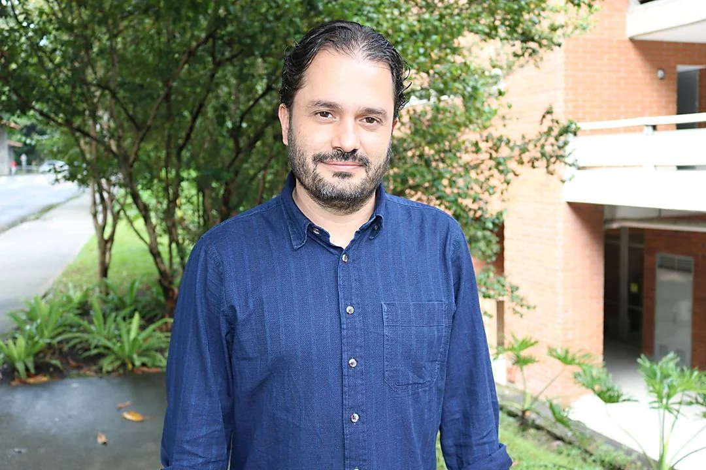

Presentación
El cambio climático ya no es una advertencia lejana: es el presente que habitamos. Lo sentimos en sequías, inundaciones, olas de calor, ríos que se desbordan y ciudades que ya no pueden vivir como antes. Y, sin embargo, sigue siendo uno de los temas peor explicados del planeta: mezcla de datos sólidos, simplificaciones, alarmismo y negacionismo en la misma conversación.
Esta Master Class propone contarlo de otra manera: en cuatro historias. No como un manual técnico frío, sino como un recorrido riguroso y cercano, guiado por el experto en hidrología Juan Fernando Salazar, Ph. D., que va de lo esencial a lo inmediato: qué es el cambio climático, cómo nos obliga a cambiar la forma de vivir, dónde están los puntos de inflexión que pueden sacudirlo todo y cómo —desde hoy— nos movemos hacia formas de adaptación posibles.
No es un meteorito que nos va a extinguir, pero sí es muy difícil y lo vamos a sentir. La pregunta no es solo si entendemos la ciencia, sino si estamos dispuestos a cooperar frente a un clima que ya cambió. Al final del recorrido, la clave será un realismo con esperanza: cooperación o extinción.
¿Quién es el experto?

Juan Fernando Salazar Villegas es Doctor y Magíster en Recursos Hidráulicos e Ingeniero Civil de la Universidad Nacional de Colombia, sede Medellín, y profesor titular de la Universidad de Antioquia. Coordina el Grupo de Ingeniería y Gestión Ambiental (GIGA), reconocido por Minciencias en categoría A1, desde el cual desarrolla investigación, docencia y extensión en hidrología, calidad del agua y del aire, cambio ambiental y sostenibilidad.
Su trabajo conecta la ciencia ambiental con problemas concretos del territorio: ha participado en proyectos como SOS-Cuenca (sostenibilidad de la cuenca Magdalena-Cauca bajo escenarios de cambio climático y pérdida de bosques) y REDRÍo (monitoreo del río Aburrá, desde Caldas hasta su desembocadura en el Porce), además de investigaciones sobre almacenamiento hídrico, modelación climática e interacciones tierra-atmósfera en los Andes tropicales y la Amazonía. El GIGA colabora con instituciones como el IPCC, el IDEAM, CORANTIOQUIA, el Área Metropolitana del Valle de Aburrá, EPM e IHE Delft, entre otras.
Salazar ha publicado ampliamente sobre hidrología, calidad del aire en valles urbanos, cambio climático, puntos de inflexión climáticos y la relación entre ambiente y sociedad. Más información sobre su grupo de investigación está disponible en la ficha del GIGA en la Universidad de Antioquia.
Un vistazo al contenido
Cambio climático en cuatro historias. Cada sesión es un capítulo del relato: riguroso en lo científico, claro en lo humano y anclado en casos reales.
1. ¿Qué carajos es el cambio climático? — Riguroso pero simple: el cuento de la bomba y el balde, conceptos, cifras, causas, efectos y rudimentos para entender de verdad de qué estamos hablando.
2. Clima nuevo, vida nueva — No podemos vivir la vida vieja en el clima nuevo. Si cambia el clima, tiene que cambiar nuestra forma de vivir. Casos de la vida real alrededor del mundo: el río Aburrá, las inundaciones de Valencia, la mansión que ya no vale nada…
3. Cimbronazos climáticos — Historias de puntos de inflexión: esos momentos en que un sistema —un glaciar, una corriente oceánica, un ecosistema, una ciudad— cruza un umbral y deja de comportarse como antes.
4. Nómadas climáticos — Historias de adaptación al cambio climático, desde alternativas actuales hasta el futuro de niños y niñas. Cierre en clave de realismo con esperanza: no es un meteorito que nos va a extinguir, pero sí es muy difícil y lo vamos a sentir. Cooperación o extinción.
Es importante señalar que el orden y la extensión con la que se tratarán los temas depende de la elección del experto.
A quién va dirigida esta actividad
Esta Master Class está dirigida a entusiastas, estudiantes, profesionales, docentes y público general interesado en comprender el cambio climático con base científica. No se necesitan conocimientos previos de matemáticas, física o ciencias de la Tierra, aunque un interés genuino por la naturaleza y el medio ambiente enriquecerá la experiencia. Pueden participar jóvenes y adultos; se recomienda una edad mínima de 12 años.
Metodología
Las Master Class de la Dr. Z Academy son espacios de formación e interacción académica con expertos o expertas en disciplinas específicas. Tienen una duración máxima de 4 sesiones de 2 horas cada una. Este evento no es gratuito. Puedes consultar el valor y las formas de pago en el enlace de inscripción.
Esta Master Class es virtual: sesiones sincrónicas que pueden seguirse en vivo mientras se graban y también en diferido. Las sesiones se realizan los lunes de 6:30 pm a 8:30 pm (hora Colombia), del 14 de septiembre al 12 de octubre de 2026.
Todo el material de la Master Class —presentaciones, lecturas recomendadas y la totalidad de los videos grabados— se compartirá con las personas inscritas a través de la plataforma Google Classroom (¡necesitas una cuenta de Google para acceder a ella!).
Certificación
Al terminar la Master Class recibirás un certificado de participación firmado por el experto invitado. Para obtener el certificado se deberá demostrar la asistencia o reproducción de por lo menos el 75% de las sesiones (3 sesiones) dentro del plazo del evento.
En el caso de la Master Class Cambio Climático, el plazo para demostrar la asistencia será el 15 de octubre de 2026.
Datos para no olvidar
Estos son los datos que no puedes olvidar sobre la Master Class:
- En esta Master Class recorreremos el cambio climático en cuatro historias: qué es, cómo cambia nuestra vida, los cimbronazos y la adaptación.
- Nuestro experto invitado es Juan Fernando Salazar Villegas, Ph. D., coordinador del grupo GIGA de la Universidad de Antioquia.
- La Master Class se realiza en 4 sesiones de 2 horas cada una.
- Las sesiones se graban los lunes de 6:30 pm a 8:30 pm (hora Colombia).
- El evento va del 14 de septiembre al 12 de octubre de 2026.
- Es un evento virtual; las grabaciones se transmitirán en vivo a través de Google Meet.
- Todo el material (videos, presentaciones, material complementario) se comparte por Google Classroom. Necesitas una cuenta personal en Google.
- Para obtener el certificado debes asistir o reproducir el 75% de las sesiones antes del 15 de octubre de 2026.
- Puedes inscribirte en https://drz.academy/producto/cambio-climatico/.
¡Nos vemos!